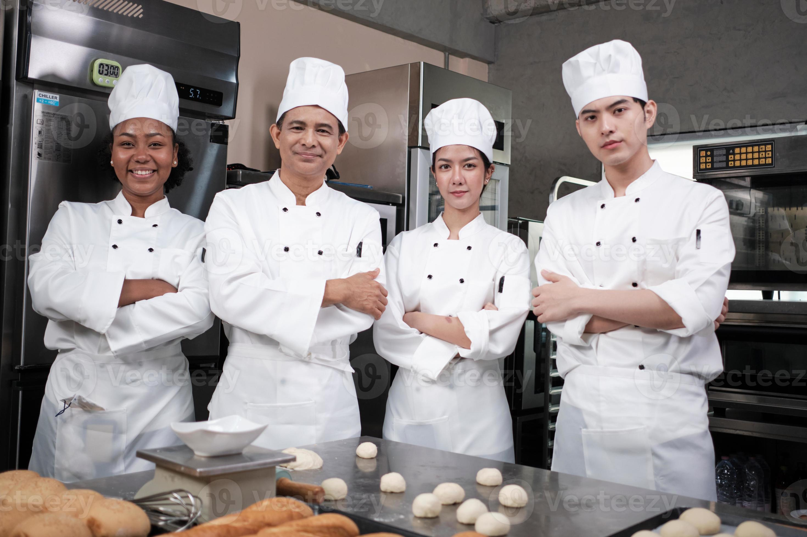
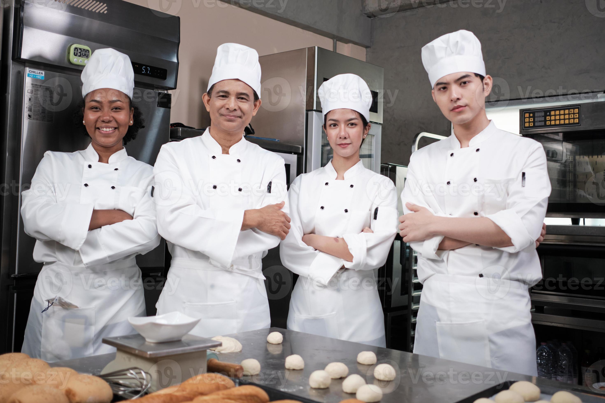

Mon Restaurant a été fondé en 2000 par notre chef renommé, Jean Dupont, avec pour mission de créer une expérience culinaire inoubliable. Notre cuisine est un mélange de tradition et d'innovation, utilisant des ingrédients frais et locaux pour préparer des plats raffinés.
Nous nous engageons à offrir une atmosphère chaleureuse et accueillante à tous nos clients, avec un service de haute qualité et une attention aux détails.
Que vous veniez pour un dîner romantique, une réunion de famille ou un événement spécial, nous nous assurons que chaque visite soit unique et mémorable.
 
